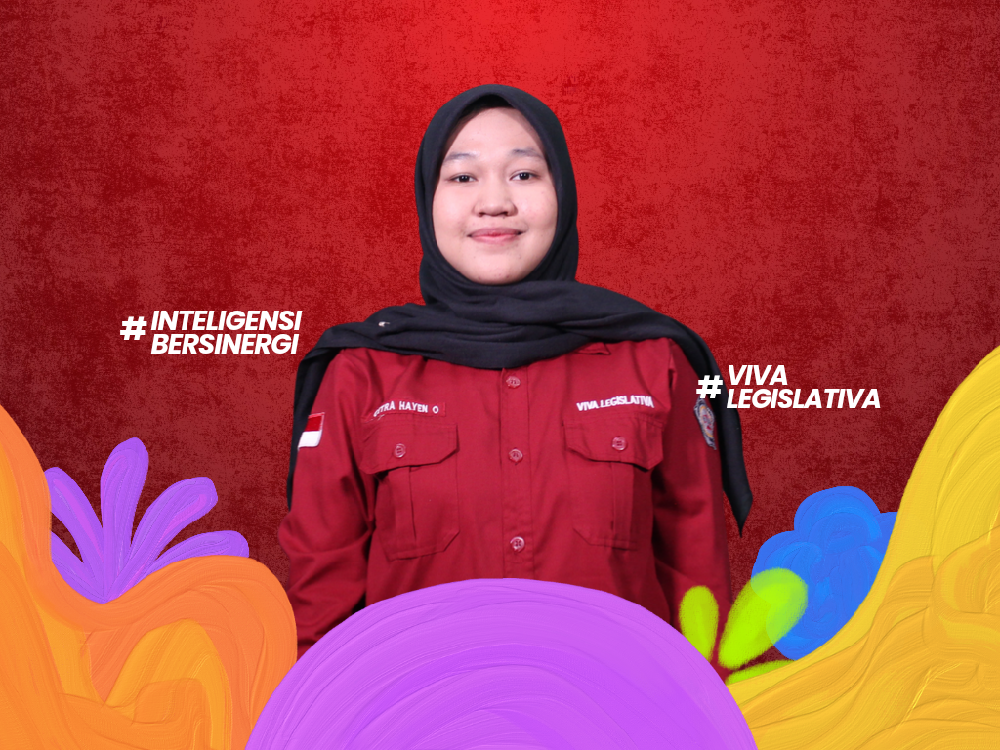
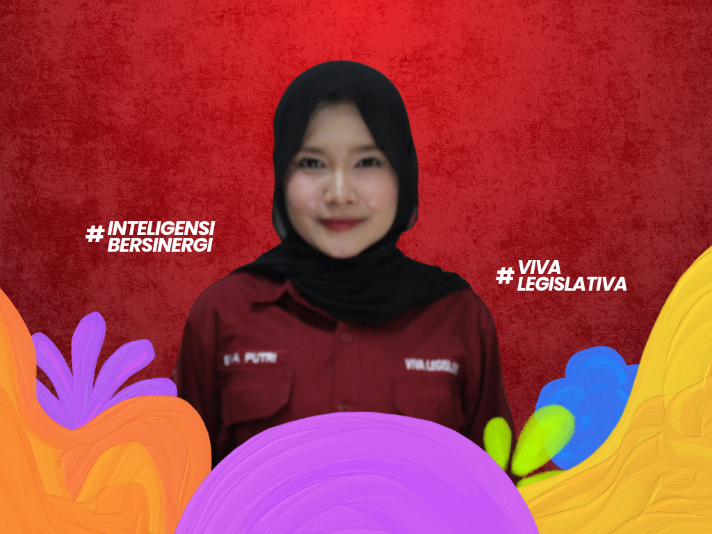
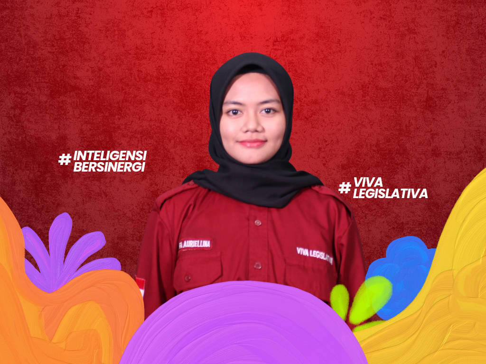

KOORDINATOR KOMISI V

Mengenal lebih dekat Komisi V Dewan Legislatif Mahasiswa Poltekkes Kemenkes Jakarta III Periode 2026.
Halo Mahasiswa Poltekkes Kemenkes Jakarta III!
Perkenalkan kami dari Komisi V Dewan Legislatif Mahasiswa Poltekkes Kemenkes Jakarta III Periode 2026.
Komisi V memiliki peran dalam bidang penelitian dan pengembangan, khususnya dalam melakukan kajian serta mengembangkan informasi yang dapat menjadi bahan pertimbangan bagi Dewan Legislatif Mahasiswa dalam menjalankan fungsi dan tugasnya.
Kami percaya bahwa setiap keputusan yang baik membutuhkan dasar informasi dan kajian yang kuat. Oleh karena itu, Komisi V hadir untuk mengembangkan penelitian, melakukan pengkajian, serta menghasilkan informasi yang dapat mendukung perkembangan organisasi mahasiswa.
Yuk, kenal lebih dekat dengan anggota Komisi V!






Melaksanakan penelitian dan pengembangan dalam keorganisasian mahasiswa.
Bertanggung jawab dalam kegiatan eksternal DLM Poltekkes Kemenkes Jakarta III.
MMerumuskan, merencanakan, dan melaksanakan rancangan ketetapan tentang Pemilihan Umum Raya (PEMIRA) LKM Poltekkes Kemenkes Jakarta III.
Menjalankan forum strategis dalam membangun jaringan komunikasi efektif serta sebagai sarana pertukaran wawasan antarlembaga legislatif dari kampus lain, sehingga kegiatan ini dapat menjadi suatu instrumen dalam meningkatkan kualitas dan fungsi organisasi Poltekkes Kemenkes Jakarta III yang adaptif dan profesional.

Melaksanakan sidang apabila terdapat suatu hal yang bersifat mendesak untuk segera dilakukan pembahasan ataupun hal lain yang bersifat tentatif.

Merupakan suatu program kerja dari komisi lima DLM PKJ 3 yang dibantu oleh perangkat pemira lain. Kegiatan ini merupakan wujud pelaksanaan demokrasi yang tepat bagi mahasiswa untuk mewujudkan regenerasi kepemimpinan di lkm poltekkes kemenkes jakarta 3, dengan memilih ketua umum DLM dan presiden serta wakil presiden mahasiswa Poltekkes Kemenkes jakarta III